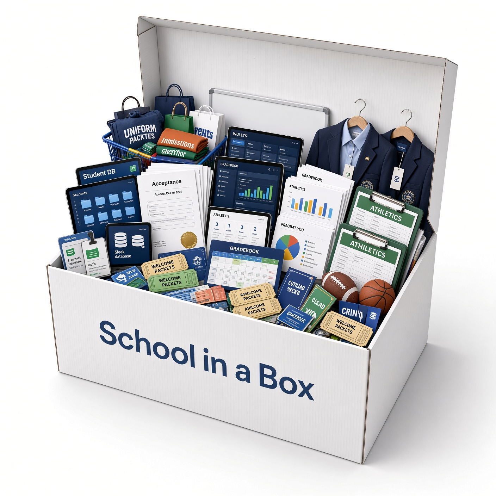

Under the stack comparison: how ANNASIS runs as a school operating system, and how we build with the people who run the day.

One platform, adapted to your vision
For schools, ANNASIS is a school operating system — not just a student information system. Admissions, SIS, Learning Management & Gradebook, tuition & billing, health records, the school store, events, donations & fundraising, uniform exchange, athletics eligibility, and communication sit on one footing. Where most SIS platforms fall short — ecommerce, event management, approvals, and uniform exchange without separate systems — is where we tailor with the campus. Some peers cover one or two of those jobs; few cover them together, and fewer still reshape the product around a school’s specific vision.

Designed with the office
Across every pillar we design with the people who run the day — not for a generic buyer. Listen first, adapt modules and workflows to that organization’s vision, and keep partnership open after go-live.
A single parent portal for an exceptional experience
One family portal — apply, register, pay, and stay informed on the school’s own site. Parents get a clearer campus experience without a second brand or a consumer ticketing destination.
Sit beside what you have — or replace it when you are ready
If the office is unable to replace the system this cycle, ANNASIS can sit beside it and run the modules that fill the gaps — event registration, school store, athletics eligibility, forms, communication, billing, and more. Jog before you run. See the Education Ecosystem (integrations) for LMS, Clever/ClassLink, QuickBooks, and SIS options.